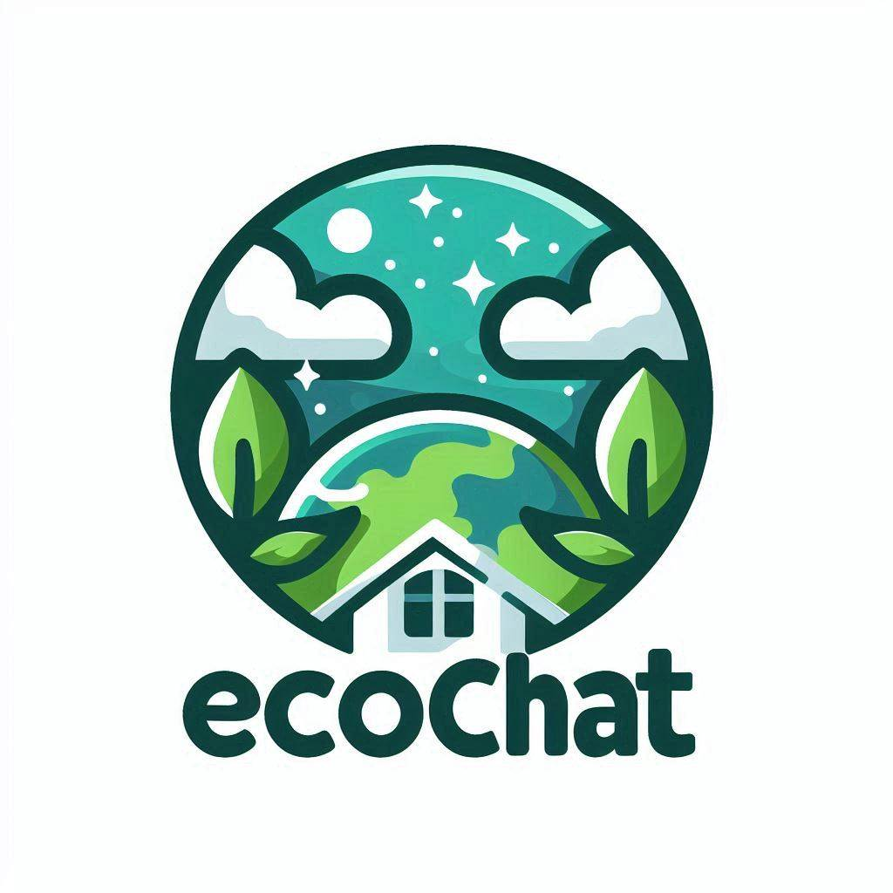

Apps
EcoChat
¿Para qué sirve?
La inteligencia artificial (IA) y el aprendizaje automático (ML) están revolucionando la forma en que abordamos la gestión de residuos y el reciclaje. Un chatbot ecológico puede ser una herramienta valiosa para educar y concienciar a la población sobre la importancia del reciclaje y la correcta disposición de los residuos.
¿Que funcionalidades tiene?
Funcionalidades del chatbot ecológico - Reconocimiento de residuos: el chatbot puede utilizar algoritmos de visión por computadora para identificar el tipo de residuo que se está tirando y proporcionar recomendaciones sobre cómo clasificarlo correctamente. - Recomendaciones de reciclaje: basándose en la información proporcionada por el usuario, el chatbot puede ofrecer consejos personalizados sobre qué residuos pueden ser reciclados y cómo prepararlos adecuadamente. - Educación ecológica: el chatbot puede proporcionar información y recursos educativos sobre la importancia del reciclaje, los impactos ambientales de la mala gestión de residuos y las mejores prácticas para reducir, reutilizar y reciclar. - Integración con marketplace: el chatbot puede estar integrado con plataformas de marketplace para facilitar la compra y venta de productos reciclados o reutilizados, fomentando la economía circular.
¿Quieres probar el EcoChat. entra a este link: https://ecobotchat-c9vzwe8vmgdyx8ywufgaou.streamlit.app/
EcoApp
Es una aplicación de clasificación de imágenes en Android que utiliza un modelo de TensorFlow Lite personalizado. Esta aplicación permite a los usuarios tomar una foto con la cámara del dispositivo y luego clasificar la imagen en una de las categorías definidas. Las categorías incluyen "METAL", "VIDRIO", "PAPEL", "PLASTICO", "CARTON", y "NO_RECICLABLE".
¿Quieres probarla solo descargala (Como es una app en desarrollo aun no tiene todos los permisos de seguridad). Link: https://drive.google.com/drive/folders/1oubfZg-JPBxb8OH3R7oKZJKZ2iO40GJz
Bibliografía:
Estudios sobre optimización de la colocación de contenedores: Wei, Y., Zheng, F., & Zhong, S. (2018). Optimization of waste collection routes in urban areas: A case study. Sustainability, 10(2), 485. Artículos sobre gestión de residuos en América Latina: Gómez, M., Martínez, J., & Navia, R. (2008). Solid waste management and its impact on greenhouse gas emissions in Chile. Waste Management, 28(9), 2654-2661. Normas y regulaciones locales: Gobierno de la Ciudad de México. (2017). Ley de Residuos Sólidos para la Ciudad de México. De México, C. (2016). INVENTARIO DE RESIDUOS SÓLIDOS. https://www.sedema.cdmx.gob.mx/storage/app/media/IRS-2016.pdf IJ-Apps/Image-Classification-App-with-Teachable-Machine: Android app that uses a TensorFlow Lite model for image classification of common objects, trained through Google’s Teachable Machine. (2024). Retrieved June 4, 2024, from GitHub website: https://github.com/IJ-Apps/Image-Classification-App-with-Teachable-Machine